12 plates. Deterministic overlays rendered by the composition-analysis skill.
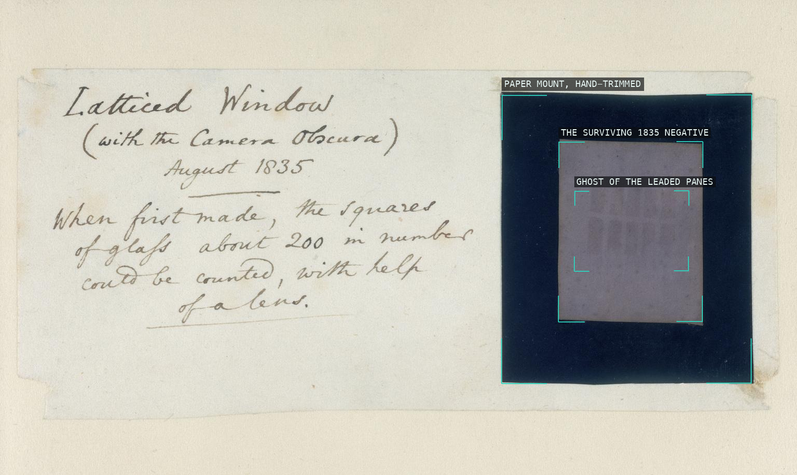
01-latticed-window Three nested rectangles -- archive mount, negative, and the negative's own faint pane grid -- show the oriel window's leaded lattice already forming the grid this book otherwise has to draw.
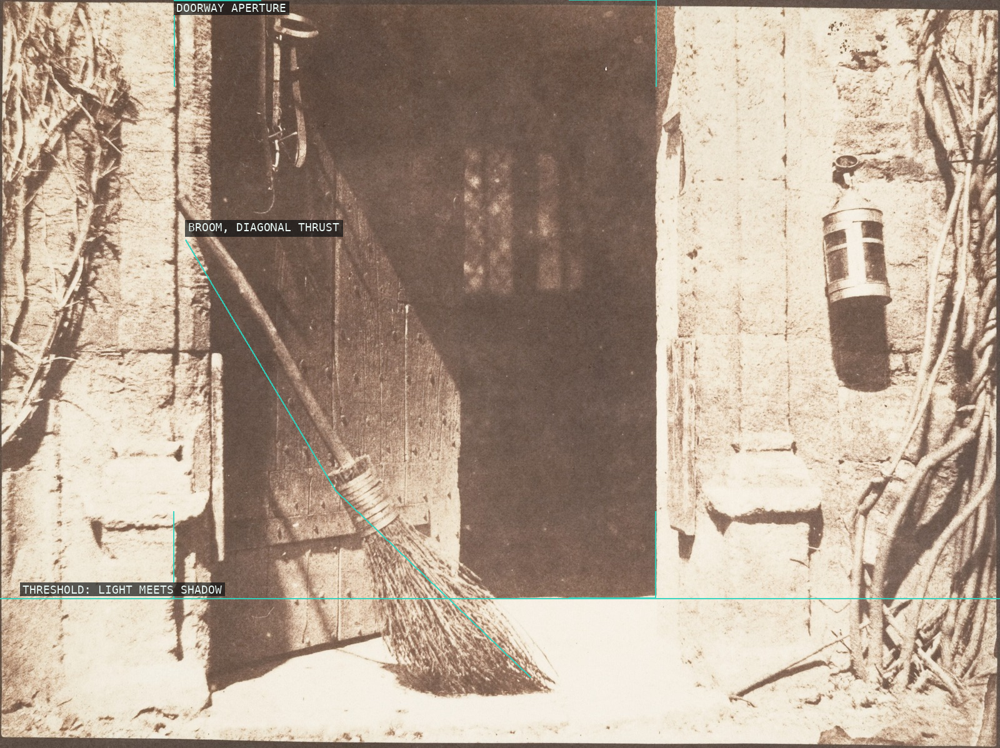
02-the-open-door A rectilinear stone doorway is cut across by the diagonal thrust of a leaning broom, its threshold the line where sunlight breaks into the dark interior.
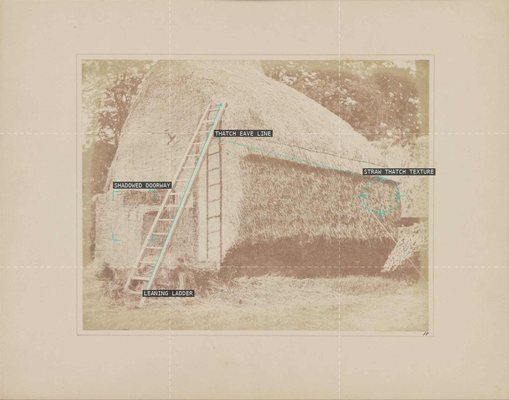
03-the-haystack The ladder's steep climb and the eave's shallow counter-diagonal brace a haystack built to fill the frame edge to edge, its resolved straw texture standing as the true specimen the calotype exists to prove.
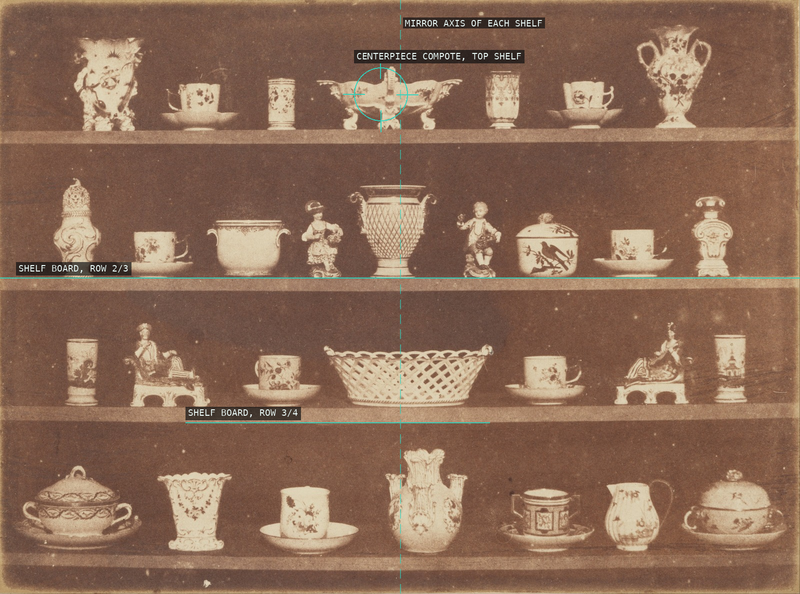
04-articles-of-china Talbot stacks four shelves into a literal grid, and mirrors each shelf's china around a center-line specimen — the still-life turned into a catalogue.
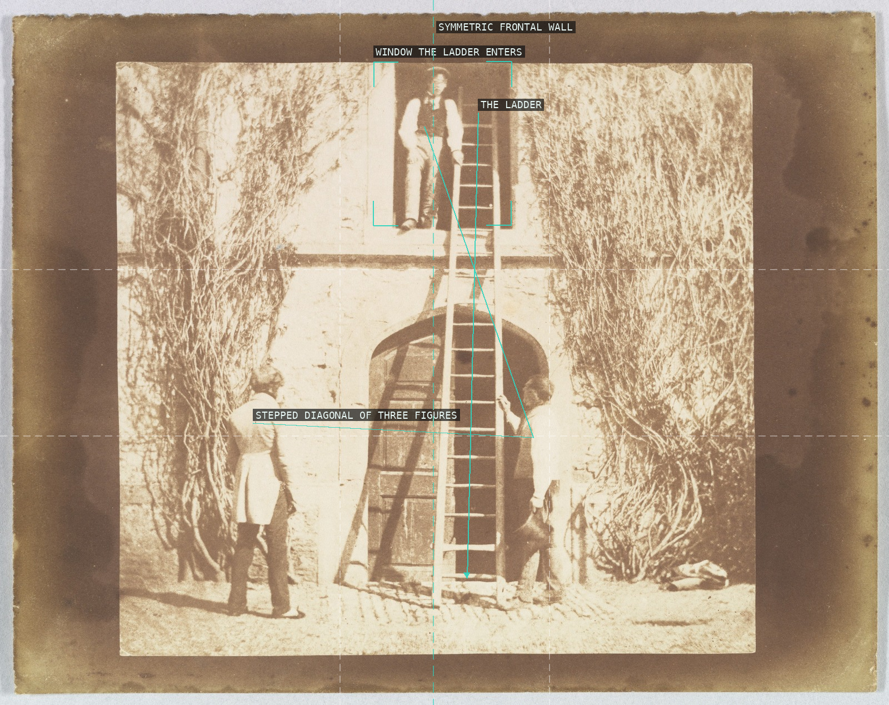
05-the-ladder A leaning ladder threads three men into a single stepped diagonal that cuts across an otherwise mirror-symmetric, flat facade.
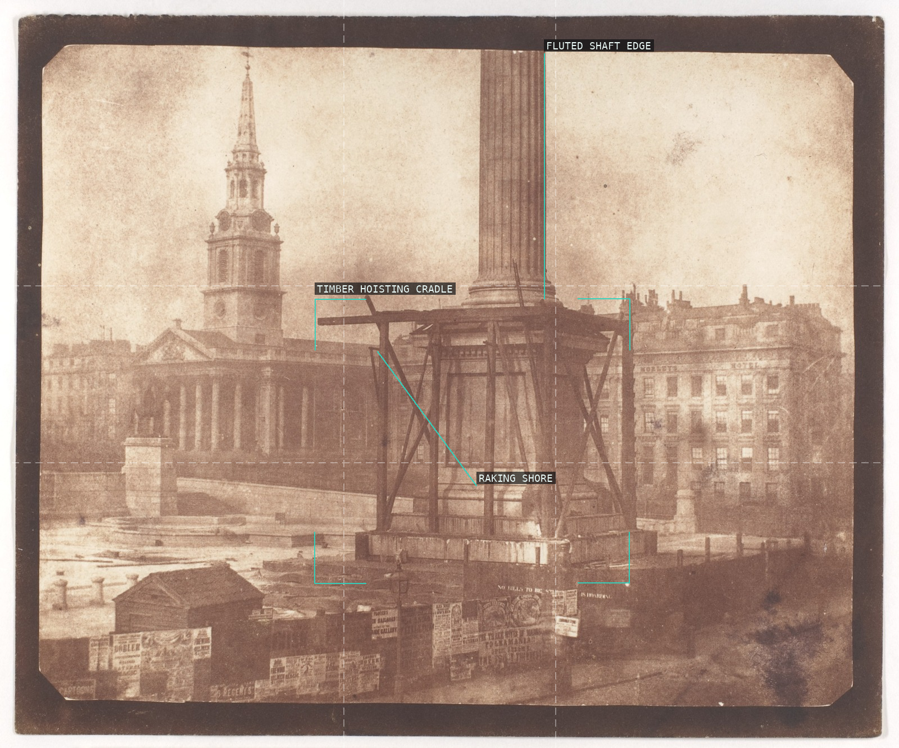
06-nelsons-column A timber derrick cages the column mid-erection, its raking shores squaring off against the shaft's fluted vertical so the unfinished monument reads as pure construction geometry against open sky.
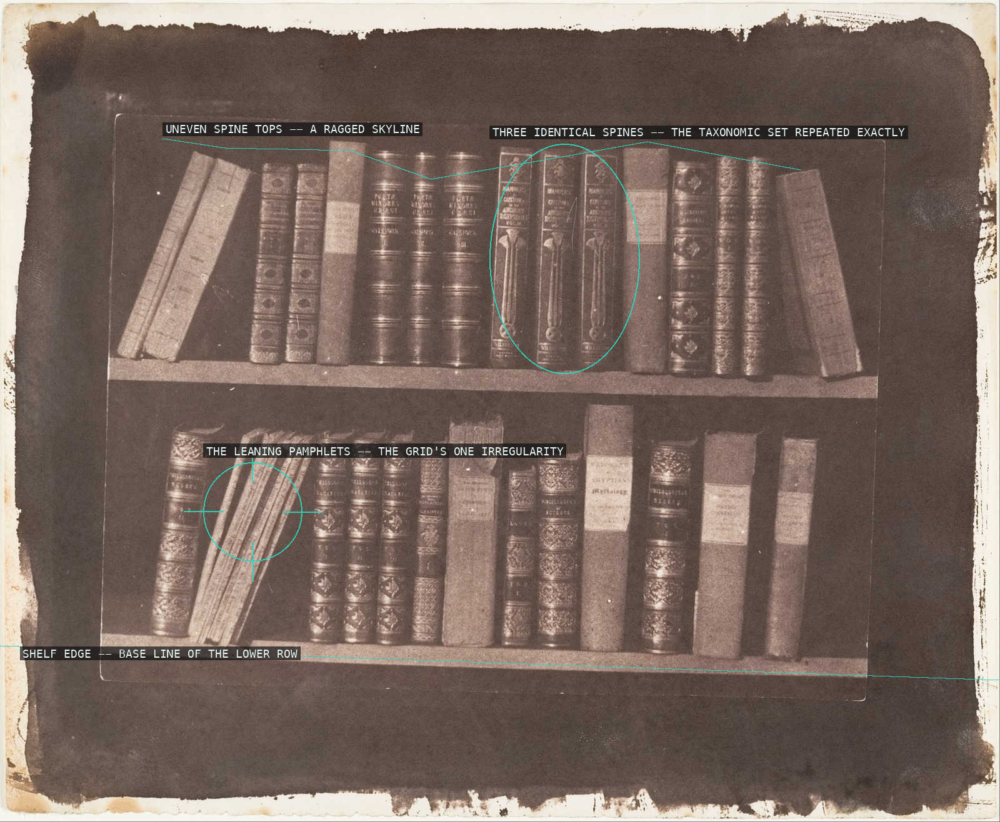
07-scene-in-library A shelf of bindings becomes a taxonomic grid -- dense, legible verticals repeated (a matching trio twice over) against the shelf's own edge, with one leaning cluster of pamphlets the sole break in the rhythm, an ancestor of Blossfeldt's and Ruscha's typological arrays.
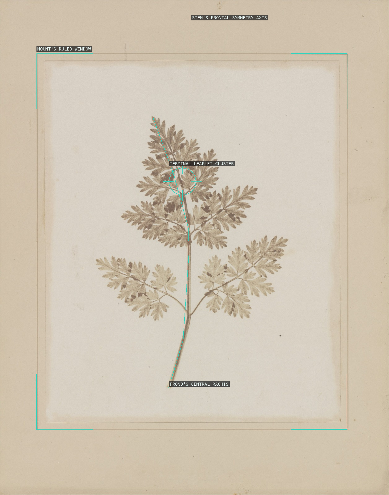
08-leaf-of-a-plant The leaf is its own printing plate: laid flat and contact-printed, the frond centers itself on its own stem axis inside the mount's ruled window, structure alone -- no lens, no framing -- supplying the composition.
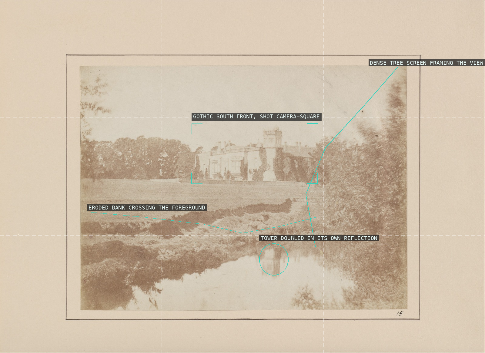
09-lacock-abbey-wiltshire Talbot squares his camera dead-level on his own Gothic house, letting a tree screen and an eroded foreground bank frame a view still enough to mirror the tower in the water below.
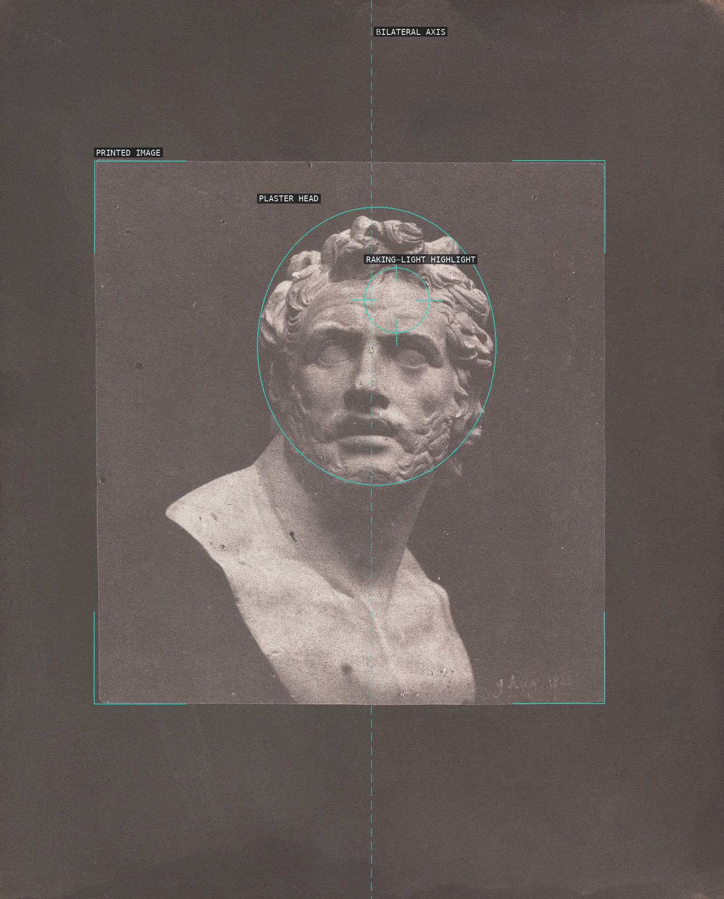
10-bust-of-patroclus Held near-centered on its own bilateral axis within the printed frame, the bust's volume is carried entirely by raking light rather than by outline.
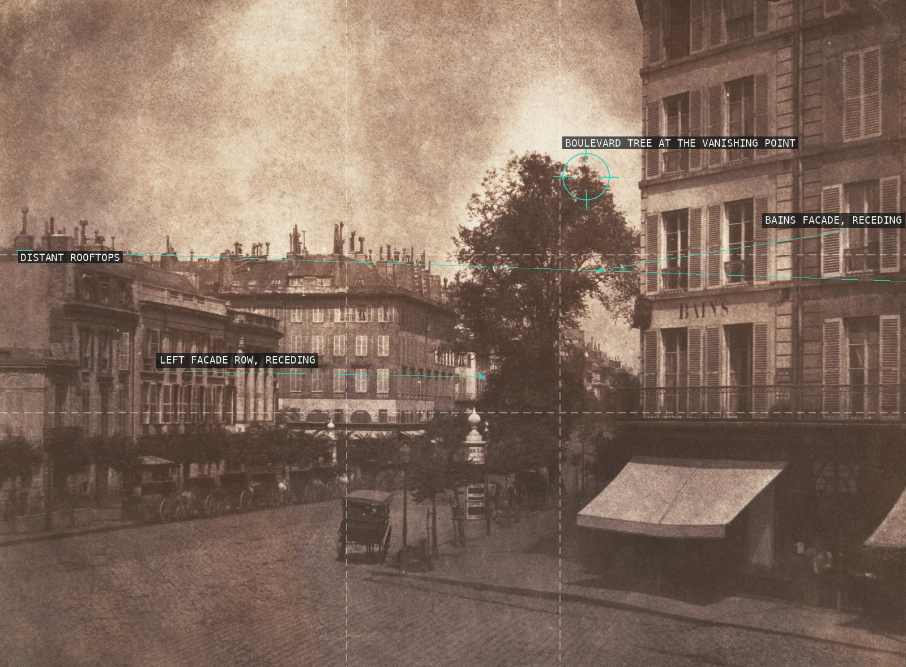
11-boulevards-at-paris Two matched rows of building facades recede in one-point perspective to a shared vanishing point marked by the lone boulevard tree, Talbot's earliest urban depth study.
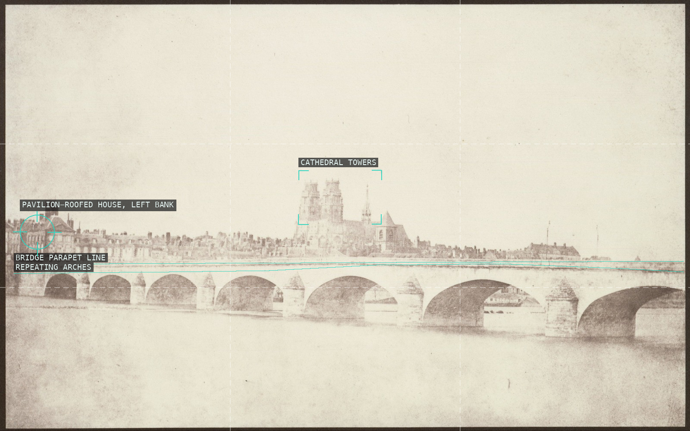
12-bridge-of-orleans The bridge's repeated arches form a steady horizontal band low in the frame, with the cathedral's towers as the single vertical accent against wide open sky and river.